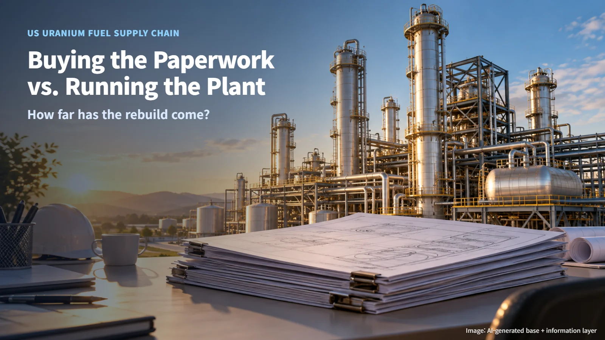
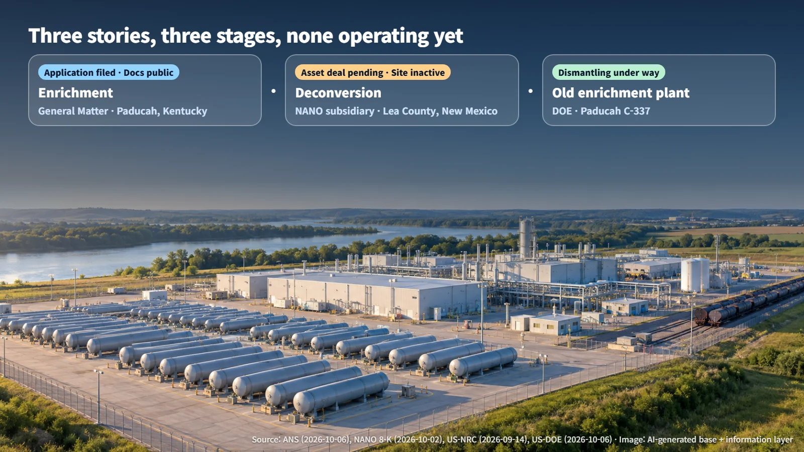
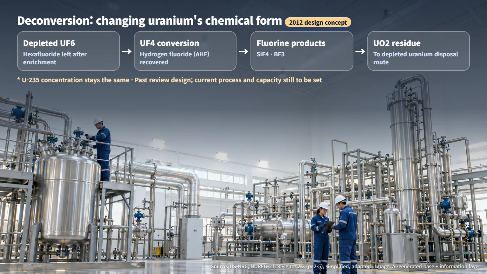
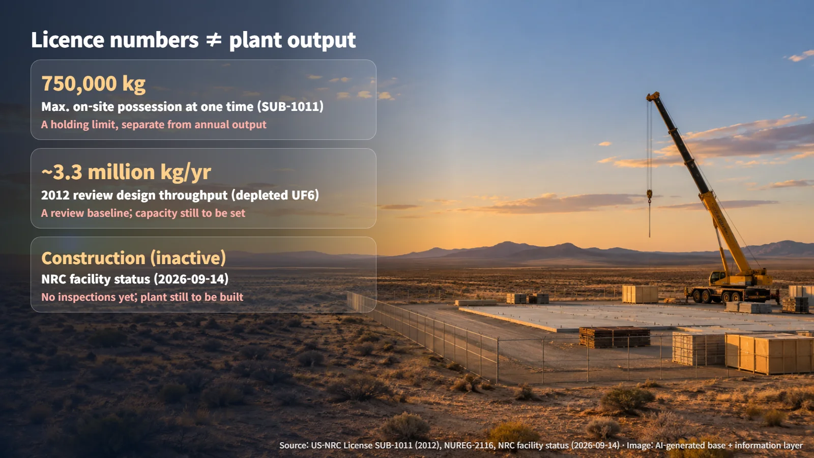

United States · Uranium Fuel Supply Chain
Buying the Paperwork vs. Running the Plant: Where the US Uranium Fuel Supply Chain Stands
An enrichment licence application, a deconversion asset deal and an old enrichment plant being dismantled: three stories at the starting and clean-up stages of the US fuel supply chain.
"The United States is rebuilding its nuclear fuel supply chain" has become a familiar headline. In the past ten days alone, three related announcements arrived in quick succession: a licence application for an enrichment facility, an acquisition of fuel-processing assets, and progress in dismantling an old enrichment plant. Read quickly, the headlines suggest new plants are about to start up. Following the public documents available as of October 7, 2026, step by step, shows that all three stories sit at a starting stage or a clean-up stage. Let's look at how far each one has actually come.


The Fuel Supply Chain Map: How Enrichment and Deconversion Differ
To read these stories, it helps to separate two processes first. Enrichment raises the share of uranium-235, the isotope that sustains fission well. Picture a bowl of mixed beans in which you increase the proportion of the one kind you need. HALEU (high-assay low-enriched uranium) is fuel enriched to a higher level than ordinary power reactor fuel, and some advanced reactor designs are built to use it.
Deconversion is a different kind of job. It changes the chemical form of the depleted uranium left over after enrichment, uranium in which the share of uranium-235 has dropped. The US Nuclear Regulatory Commission's (NRC) 2012 Environmental Impact Statement describes a plan to convert depleted UF6 (uranium hexafluoride) into UF4 (uranium tetrafluoride) while recovering hydrogen fluoride, and then to make fluorine products and UO2 (uranium dioxide). In the bean analogy, it is the work of reprocessing the leftover beans into a form that is easier to store or handle.

The key point fits in one sentence: deconversion changes the chemical form of uranium and keeps the uranium-235 concentration exactly where it was. With that distinction in mind, the next stories come into much sharper focus.
Buying Licences and Designs, With the Plant Still to Be Built
HALEU Energy Fuel, a wholly owned subsidiary of NANO Nuclear Energy, signed an asset purchase agreement with Radnostix (formerly International Isotopes) and IIFP on September 28, 2026. According to the company's October 2 filing (Form 8-K), the assets to be acquired include NRC licence SUB-1011, design and regulatory documents, and intellectual property including patents. The NRC's facility status page, updated on September 14, lists this facility in Lea County, New Mexico, as "Construction (inactive)" and records no inspection history yet. In other words, the plan is to buy the documents and rights needed to build a plant, with the plant itself still to be built.
The deal is also still open. Under US federal regulations (10 CFR 40.46), transferring a licence requires the NRC's written consent. Licensee status moves to the buyer once that consent is granted. Conditions such as site rights and environmental due diligence must also be met before the deal closes.
The numbers call for careful reading as well. The licence's maximum possession limit of 750,000 kg is the amount that can be held on site at any one time. Think of it as a warehouse's capacity, separate from what the facility produces in a year. The design throughput in the 2012 Safety Evaluation Report (about 3.3 million kg of depleted UF6 per year) is the baseline used in that review, while current capacity and production remain to be established. The licence covers deconversion, so HALEU enrichment or production would need separate authorization, whatever the company's name suggests. After the deal closes, the design still has to be updated, the plant built, its safety functions verified and financial assurance put in place.

A Published Application, With the Review Still Ahead
Around the same time, news also came from Paducah, Kentucky. General Matter announced its first licence application for a Paducah enrichment facility on September 28, and application materials including the environmental report were posted to ADAMS, the NRC's public document repository, on October 5. The company says the application covers an integrated safety analysis, an environmental report, a fire hazards analysis, decommissioning funding, security and emergency planning.
A few details are worth keeping straight. After the current application, the company plans to file a separate amendment application in 2027 for HALEU production, so the present application and the future HALEU production goal are two distinct steps. Specific enrichment technology details were redacted from the public version, so the process design and its performance remain outside public view. The company's target of starting production in 2030 still depends on a licence being issued and the facility being built.
To use an analogy, the application has been logged as received, and the admission decision is still to come. Document publication, the progress of the review and issuance of a licence are separate milestones.
Same City, an Old Enrichment Plant Being Dismantled
Interestingly, work running in the opposite direction is under way in the same city. On October 6, the US Department of Energy's (DOE) Office of Environmental Management announced that crews had cut up the first fissile-material-related converter in Paducah's C-337 building. Converters are components of the old gaseous diffusion enrichment process; they are removed from their positions and segmented into smaller pieces to prepare the building for demolition.
Earlier, 497 converters were removed from the C-333 building. The roughly 500 components in C-337 are associated with fissile material, which makes the work more complex. DOE therefore stresses the need for enhanced monitoring, strict containment, dedicated safety measures to prevent an accidental nuclear reaction, and skilled workers. Segmentation is a preparatory step for demolition and site cleanup, with waste disposal still to follow.
In one city, one company is filing an application for a new enrichment facility while crews nearby cut apart old enrichment equipment. A fuel supply chain becomes complete only by moving step by step: from paperwork to a licence, from a licence to construction and verification, and finally to actual operation. The next time you see a "supply chain rebuild" headline, start with three questions: Has a licence been issued? Has the plant been built? Has it actually produced anything? Those questions alone make it much easier to judge how much weight the news carries.